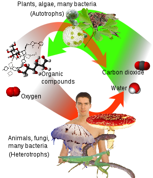
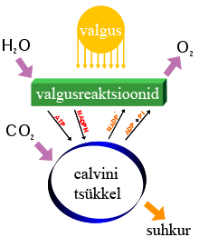

Fotosüntees on päikeseenergia abil toimuv protsess, mille käigus muundub süsihappegaas orgaanilisteks ühenditeks (peamiselt suhkruteks). Fotosüntees toimub taimedes ja mitmetes bakteriliikides (aga mitte arhebakterites). Fotosünteesivaid organisme nimetatakse autotroofideks, kuna nad suudavad ise oma elutegevuseks vajalikke ühendeid sünteesida. Taimedes, vetikates ja tsüanobakterites kasutatakse fotosünteesi käigus süsihappegaasi ja vett, jääkainena eraldub hapnik. Fotosüntees on eluliselt tähtis Maa kõikidele aeroobsetele organismidele. Fotosüntees aitab säilitada atmosfääri normaalset hapnikutaset ning sellest sõltub peaaegu kogu elu kas otseselt (kui energiaallikas) või kaudselt (kui toidu peamine energiaallikas).
Joonis 1. Ülevaade autotroofide ja heterotroofide vahelisest tsüklist.
Joonis 1 kujutab autotroofide ja heterotroofide vahelisest tsüklit. Fotosüntees on peamine vahend, mille abil taimed, vetikad ja paljud bakterid toodavad orgaanilisi ühendeid ja hapnikku süsihappegaasist ja veest (vt. roheline nool joonisel).
Fotosüntees muundab Päikeselt saadud energia keemiliseks energiaks, lagundab vee O2 vabastamiseks ja seob CO2 suhkrusse. Joonis 2 esitab lihtsa ülevaate fotosünteesi käigus toimuvatest keemilistest protsessidest.
Joonis 2. Lihtne ülevaade fotosünteesi käigus toimuvatest keemilistest protsessidest.